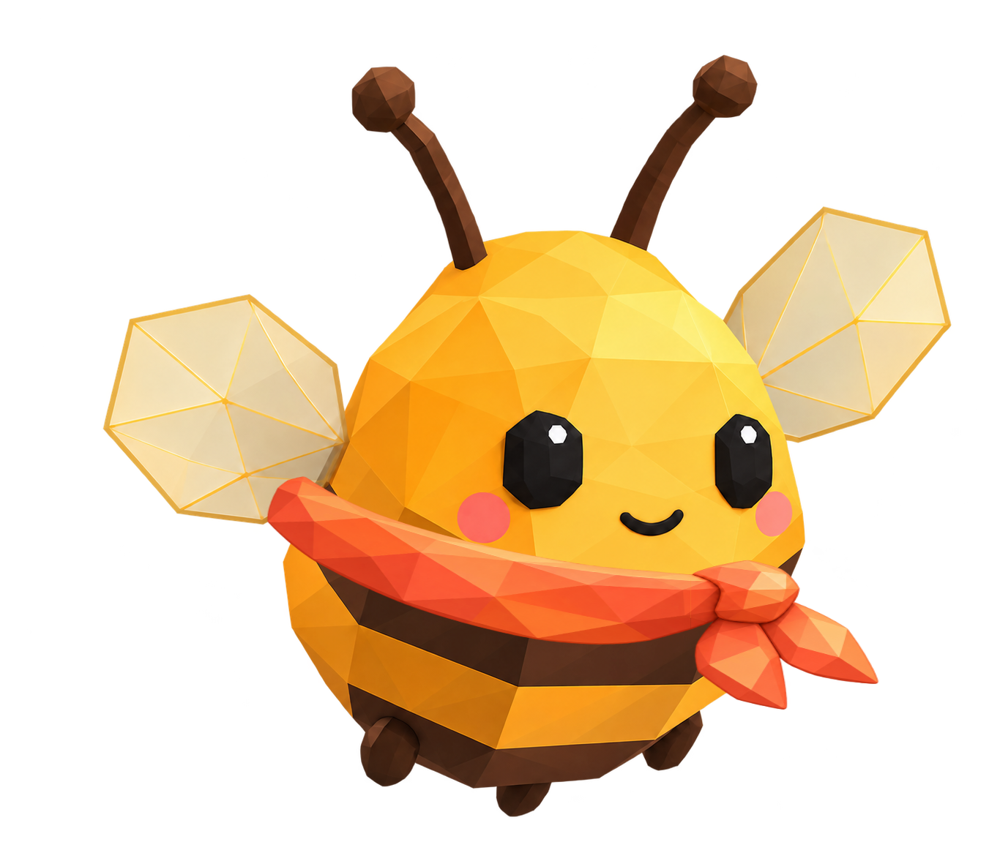
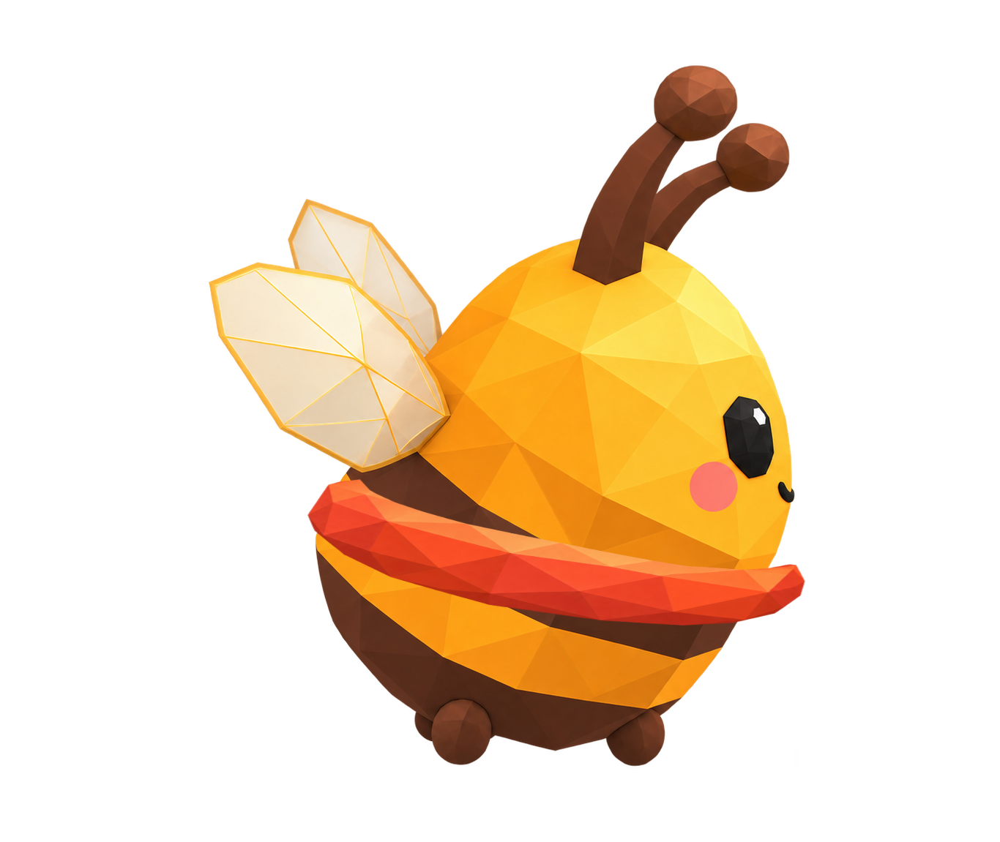
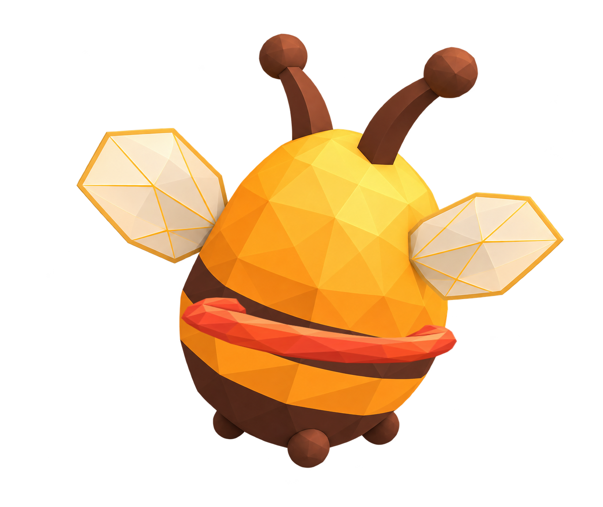
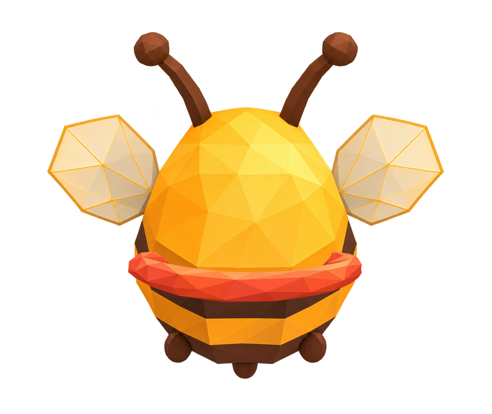

Шарф и сумка на ракурсах Жужи
Проверка посадки. Ракурс в три четверти спереди использует прежние ассеты и настройки.
Спереди

3/4 спереди · прежняя посадка

Профиль

3/4 сзади

Со спины
Здесь пять основных ракурсов. Левые боковые ракурсы не зеркалим: узел шарфа и сумка должны оставаться на своих боках. Для них нужны отдельные изображения.
Прототип не подключён к основной игре.